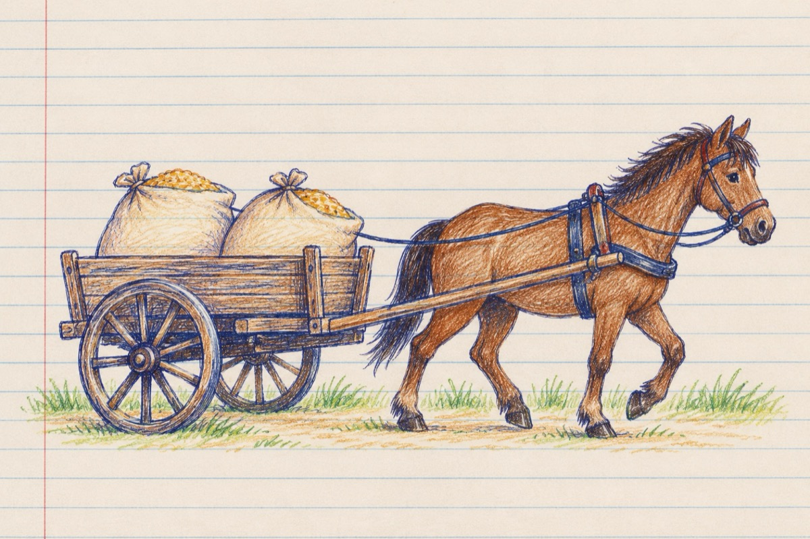

Dacă vrei, poți
De ținut calul în frâu
Mulți o știu, mulți nu o știu
Pentru asta-ți trebuie-un hăț
Și-ți trebuie și-un învăț!
Ca să poți să reușești
Stai un pic și te gândești
Nu-i așa, netam-nesam
Calul trebuie pus în ham.
Încadrat între hulube
Și-ntre lanțuri meștegite
Nu te fă că n-ai habar
Toate se leagă la car!
Cu carul din câmp aduci
Sau la iarmaroc te duci
Ori pui sacii ca povară
Să faci făină la moară.
Când vrei ca să călărești
Treci în lumea de povești
Te avânți precum un zmeu,
În ținută de jocheu!
Joci în șea prins în scărițe
Pintenând din cizmulițe
Sari obstacole și bălți
Strunind căluțul din hăț!
Iar de vrei să faci navetă
Pui calul la o șaretă
Și așa te dai măreț
Conducând calul din hăț!
Ai văzut, de vrei că poți?!
Vasile Groza